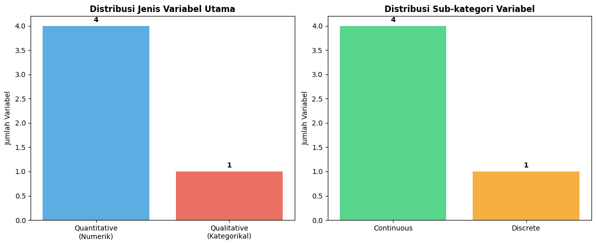
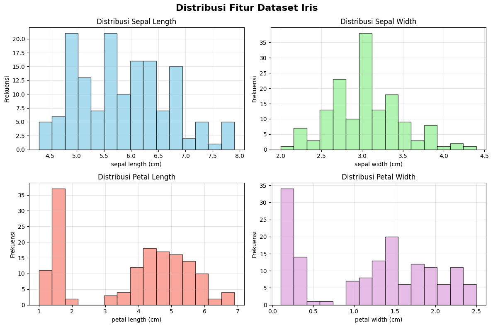
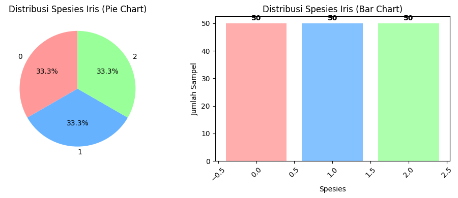
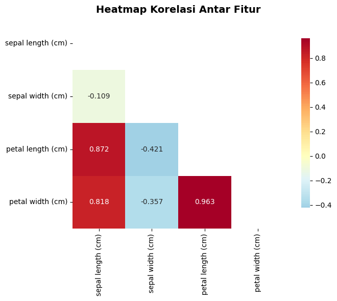
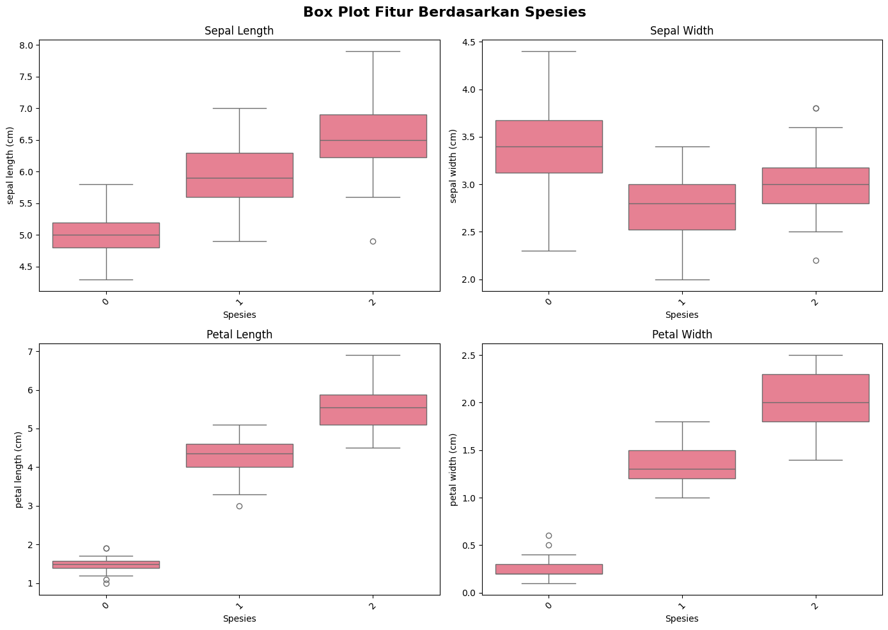

Data Understanding#
Notebook ini berisi analisis pemahaman data untuk dataset Iris klasik yang akan digunakan untuk klasifikasi spesies bunga iris.
1. Import Library dan Load Dataset#
# Install required packages
%pip install seaborn
# Import library yang diperlukan
import pandas as pd
import numpy as np
import matplotlib.pyplot as plt
import seaborn as sns
import warnings
warnings.filterwarnings('ignore')
# Import PyCaret untuk EDA dan classification
try:
from pycaret.datasets import get_data
from pycaret.classification import *
from pycaret.anomaly import *
print("PyCaret berhasil diimport")
except ImportError:
print("PyCaret tidak tersedia. Install dengan: pip install pycaret")
# Atur style untuk visualisasi
plt.style.use('default')
sns.set_palette("husl")
print("Library berhasil diimport")
[notice] A new release of pip is available: 25.2 -> 25.3
[notice] To update, run: C:\laragon\bin\python\python-3.10\python.exe -m pip install --upgrade pip
Requirement already satisfied: seaborn in c:\laragon\bin\python\python-3.10\lib\site-packages (0.13.2)
Requirement already satisfied: numpy!=1.24.0,>=1.20 in c:\laragon\bin\python\python-3.10\lib\site-packages (from seaborn) (1.26.4)
Requirement already satisfied: pandas>=1.2 in c:\laragon\bin\python\python-3.10\lib\site-packages (from seaborn) (2.2.3)
Requirement already satisfied: matplotlib!=3.6.1,>=3.4 in c:\users\achma\appdata\roaming\python\python310\site-packages (from seaborn) (3.7.5)
Requirement already satisfied: contourpy>=1.0.1 in c:\laragon\bin\python\python-3.10\lib\site-packages (from matplotlib!=3.6.1,>=3.4->seaborn) (1.3.1)
Requirement already satisfied: cycler>=0.10 in c:\laragon\bin\python\python-3.10\lib\site-packages (from matplotlib!=3.6.1,>=3.4->seaborn) (0.12.1)
Requirement already satisfied: fonttools>=4.22.0 in c:\laragon\bin\python\python-3.10\lib\site-packages (from matplotlib!=3.6.1,>=3.4->seaborn) (4.56.0)
Requirement already satisfied: kiwisolver>=1.0.1 in c:\laragon\bin\python\python-3.10\lib\site-packages (from matplotlib!=3.6.1,>=3.4->seaborn) (1.4.8)
Requirement already satisfied: packaging>=20.0 in c:\laragon\bin\python\python-3.10\lib\site-packages (from matplotlib!=3.6.1,>=3.4->seaborn) (24.2)
Requirement already satisfied: pillow>=6.2.0 in c:\laragon\bin\python\python-3.10\lib\site-packages (from matplotlib!=3.6.1,>=3.4->seaborn) (11.1.0)
Requirement already satisfied: pyparsing>=2.3.1 in c:\laragon\bin\python\python-3.10\lib\site-packages (from matplotlib!=3.6.1,>=3.4->seaborn) (3.2.1)
Requirement already satisfied: python-dateutil>=2.7 in c:\laragon\bin\python\python-3.10\lib\site-packages (from matplotlib!=3.6.1,>=3.4->seaborn) (2.9.0.post0)
Requirement already satisfied: pytz>=2020.1 in c:\laragon\bin\python\python-3.10\lib\site-packages (from pandas>=1.2->seaborn) (2025.1)
Requirement already satisfied: tzdata>=2022.7 in c:\laragon\bin\python\python-3.10\lib\site-packages (from pandas>=1.2->seaborn) (2025.1)
Requirement already satisfied: six>=1.5 in c:\laragon\bin\python\python-3.10\lib\site-packages (from python-dateutil>=2.7->matplotlib!=3.6.1,>=3.4->seaborn) (1.17.0)
Note: you may need to restart the kernel to use updated packages.
PyCaret berhasil diimport
Library berhasil diimport
# Load dataset Iris dari file CSV atau PyCaret
try:
# Coba load dari file lokal
df = pd.read_csv('data_iris.csv', delimiter=';')
# Konversi kolom numerik yang menggunakan koma sebagai decimal separator
numeric_columns = ['sepal length', 'sepal width', 'petal length', 'petal width']
for col in numeric_columns:
if col in df.columns:
# Konversi koma ke titik untuk decimal
df[col] = df[col].astype(str).str.replace(',', '.').astype(float)
# Buat kolom species numerik dan species name
df['species'] = df['Class'].map({'Iris-setosa': 0, 'Iris-versicolor': 1, 'Iris-virginica': 2})
df['species_name'] = df['Class'].map({'Iris-setosa': 'setosa', 'Iris-versicolor': 'versicolor', 'Iris-virginica': 'virginica'})
# Rename kolom untuk konsistensi dengan format sklearn
df = df.rename(columns={
'sepal length': 'sepal length (cm)',
'sepal width': 'sepal width (cm)',
'petal length': 'petal length (cm)',
'petal width': 'petal width (cm)'
})
# Drop kolom yang tidak diperlukan
if 'id' in df.columns:
df = df.drop('id', axis=1)
print("Dataset Iris berhasil dimuat dari data_iris.csv")
except FileNotFoundError:
# Jika file tidak ditemukan, gunakan dataset Iris dari PyCaret
print("File lokal tidak ditemukan. Menggunakan dataset Iris dari PyCaret...")
try:
df = get_data('iris')
df['species'] = df['species'].map({'setosa': 0, 'versicolor': 1, 'virginica': 2})
df['species_name'] = df['species'].map({0: 'setosa', 1: 'versicolor', 2: 'virginica'})
print("Dataset Iris berhasil dimuat dari PyCaret")
except:
print("Error: Tidak dapat memuat dataset dari PyCaret")
print(f"Ukuran dataset: {df.shape[0]} baris, {df.shape[1]} kolom")
print(f"Kolom dataset: {list(df.columns)}")
df.head()
Dataset Iris berhasil dimuat dari data_iris.csv
Ukuran dataset: 150 baris, 7 kolom
Kolom dataset: ['Class', 'sepal length (cm)', 'sepal width (cm)', 'petal length (cm)', 'petal width (cm)', 'species', 'species_name']
| Class | sepal length (cm) | sepal width (cm) | petal length (cm) | petal width (cm) | species | species_name | |
|---|---|---|---|---|---|---|---|
| 0 | Iris-setosa | 5.1 | 3.5 | 1.4 | 0.2 | 0 | setosa |
| 1 | Iris-setosa | 4.9 | 3.0 | 1.4 | 0.2 | 0 | setosa |
| 2 | Iris-setosa | 4.7 | 3.2 | 1.3 | 0.2 | 0 | setosa |
| 3 | Iris-setosa | 4.6 | 3.1 | 1.5 | 0.2 | 0 | setosa |
| 4 | Iris-setosa | 5.0 | 3.6 | 1.4 | 0.2 | 0 | setosa |
2. Informasi Dasar Dataset#
# Informasi umum dataset
print("=== INFORMASI DATASET IRIS ===")
print(f"Jumlah sampel: {len(df)}")
print(f"Jumlah fitur: {len(df.columns)-2} (tanpa target)")
print(f"Jumlah kelas: {df['species'].nunique()}")
print("\n=== INFO DATAFRAME ===")
df.info()
=== INFORMASI DATASET IRIS ===
Jumlah sampel: 150
Jumlah fitur: 5 (tanpa target)
Jumlah kelas: 3
=== INFO DATAFRAME ===
<class 'pandas.core.frame.DataFrame'>
RangeIndex: 150 entries, 0 to 149
Data columns (total 7 columns):
# Column Non-Null Count Dtype
--- ------ -------------- -----
0 Class 150 non-null object
1 sepal length (cm) 150 non-null float64
2 sepal width (cm) 150 non-null float64
3 petal length (cm) 150 non-null float64
4 petal width (cm) 150 non-null float64
5 species 150 non-null int64
6 species_name 150 non-null object
dtypes: float64(4), int64(1), object(2)
memory usage: 8.3+ KB
# Deskripsi variabel
print("=== DESKRIPSI VARIABEL ===")
print("\n Fitur-fitur dalam dataset:")
feature_descriptions = {
'sepal length (cm)': 'Panjang sepal (kelopak bunga) dalam cm',
'sepal width (cm)': 'Lebar sepal (kelopak bunga) dalam cm',
'petal length (cm)': 'Panjang petal (mahkota bunga) dalam cm',
'petal width (cm)': 'Lebar petal (mahkota bunga) dalam cm'
}
for feature, description in feature_descriptions.items():
print(f"• {feature}: {description}")
print("\n Target variable:")
print("• species: Spesies bunga iris (setosa, versicolor, virginica)")
=== DESKRIPSI VARIABEL ===
Fitur-fitur dalam dataset:
• sepal length (cm): Panjang sepal (kelopak bunga) dalam cm
• sepal width (cm): Lebar sepal (kelopak bunga) dalam cm
• petal length (cm): Panjang petal (mahkota bunga) dalam cm
• petal width (cm): Lebar petal (mahkota bunga) dalam cm
Target variable:
• species: Spesies bunga iris (setosa, versicolor, virginica)
3. Mengecek Tipe Data dan Jenis Variabel#
# Analisis jenis variabel berdasarkan klasifikasi
print("=== KLASIFIKASI JENIS VARIABEL ===")
print("\n Teori Jenis Variabel:")
print("• Quantitative (Numerik): Nilai angka, bisa dihitung")
print("• Qualitative (Kategorikal/Faktor): Klasifikasi atau kategori")
print("• Discrete: Nilai terpisah (tanpa nilai antara)")
print("• Continuous: Nilai kontinu (bisa pecahan)")
print("\n" + "="*60)
print(" ANALISIS VARIABEL DATASET IRIS")
print("="*60)
# Analisis setiap variabel
variable_analysis = {
'sepal length (cm)': {
'tipe_data': str(df['sepal length (cm)'].dtype),
'jenis_variabel': 'Quantitative (Numerik)',
'sub_kategori': 'Continuous',
'deskripsi': 'Nilai kontinu, bisa berupa pecahan',
'contoh_nilai': df['sepal length (cm)'].head(3).tolist(),
'rentang': f"{df['sepal length (cm)'].min():.1f} - {df['sepal length (cm)'].max():.1f} cm"
},
'sepal width (cm)': {
'tipe_data': str(df['sepal width (cm)'].dtype),
'jenis_variabel': 'Quantitative (Numerik)',
'sub_kategori': 'Continuous',
'deskripsi': 'Nilai kontinu, bisa berupa pecahan',
'contoh_nilai': df['sepal width (cm)'].head(3).tolist(),
'rentang': f"{df['sepal width (cm)'].min():.1f} - {df['sepal width (cm)'].max():.1f} cm"
},
'petal length (cm)': {
'tipe_data': str(df['petal length (cm)'].dtype),
'jenis_variabel': 'Quantitative (Numerik)',
'sub_kategori': 'Continuous',
'deskripsi': 'Nilai kontinu, bisa berupa pecahan',
'contoh_nilai': df['petal length (cm)'].head(3).tolist(),
'rentang': f"{df['petal length (cm)'].min():.1f} - {df['petal length (cm)'].max():.1f} cm"
},
'petal width (cm)': {
'tipe_data': str(df['petal width (cm)'].dtype),
'jenis_variabel': 'Quantitative (Numerik)',
'sub_kategori': 'Continuous',
'deskripsi': 'Nilai kontinu, bisa berupa pecahan',
'contoh_nilai': df['petal width (cm)'].head(3).tolist(),
'rentang': f"{df['petal width (cm)'].min():.1f} - {df['petal width (cm)'].max():.1f} cm"
},
'species': {
'tipe_data': str(df['species'].dtype),
'jenis_variabel': 'Qualitative (Kategorikal)',
'sub_kategori': 'Discrete (Nominal)',
'deskripsi': 'Kategori terpisah, tidak ada urutan',
'contoh_nilai': df['species'].unique().tolist(),
'rentang': f"{df['species'].nunique()} kategori (0, 1, 2)"
},
}
# Tampilkan analisis setiap variabel
for i, (var_name, analysis) in enumerate(variable_analysis.items(), 1):
print(f"\n{i}. VARIABEL: {var_name.upper()}")
print(f" • Tipe Data: {analysis['tipe_data']}")
print(f" • Jenis Variabel: {analysis['jenis_variabel']}")
print(f" • Sub-kategori: {analysis['sub_kategori']}")
print(f" • Deskripsi: {analysis['deskripsi']}")
print(f" • Contoh nilai: {analysis['contoh_nilai']}")
print(f" • Rentang: {analysis['rentang']}")
print(" " + "-"*40)
=== KLASIFIKASI JENIS VARIABEL ===
Teori Jenis Variabel:
• Quantitative (Numerik): Nilai angka, bisa dihitung
• Qualitative (Kategorikal/Faktor): Klasifikasi atau kategori
• Discrete: Nilai terpisah (tanpa nilai antara)
• Continuous: Nilai kontinu (bisa pecahan)
============================================================
ANALISIS VARIABEL DATASET IRIS
============================================================
1. VARIABEL: SEPAL LENGTH (CM)
• Tipe Data: float64
• Jenis Variabel: Quantitative (Numerik)
• Sub-kategori: Continuous
• Deskripsi: Nilai kontinu, bisa berupa pecahan
• Contoh nilai: [5.1, 4.9, 4.7]
• Rentang: 4.3 - 7.9 cm
----------------------------------------
2. VARIABEL: SEPAL WIDTH (CM)
• Tipe Data: float64
• Jenis Variabel: Quantitative (Numerik)
• Sub-kategori: Continuous
• Deskripsi: Nilai kontinu, bisa berupa pecahan
• Contoh nilai: [3.5, 3.0, 3.2]
• Rentang: 2.0 - 4.4 cm
----------------------------------------
3. VARIABEL: PETAL LENGTH (CM)
• Tipe Data: float64
• Jenis Variabel: Quantitative (Numerik)
• Sub-kategori: Continuous
• Deskripsi: Nilai kontinu, bisa berupa pecahan
• Contoh nilai: [1.4, 1.4, 1.3]
• Rentang: 1.0 - 6.9 cm
----------------------------------------
4. VARIABEL: PETAL WIDTH (CM)
• Tipe Data: float64
• Jenis Variabel: Quantitative (Numerik)
• Sub-kategori: Continuous
• Deskripsi: Nilai kontinu, bisa berupa pecahan
• Contoh nilai: [0.2, 0.2, 0.2]
• Rentang: 0.1 - 2.5 cm
----------------------------------------
5. VARIABEL: SPECIES
• Tipe Data: int64
• Jenis Variabel: Qualitative (Kategorikal)
• Sub-kategori: Discrete (Nominal)
• Deskripsi: Kategori terpisah, tidak ada urutan
• Contoh nilai: [0, 1, 2]
• Rentang: 3 kategori (0, 1, 2)
----------------------------------------
# Buat tabel ringkasan jenis variabel
print("\n=== TABEL RINGKASAN JENIS VARIABEL ===")
# Buat DataFrame untuk ringkasan
summary_data = []
for var_name, analysis in variable_analysis.items():
summary_data.append({
'Nama Variabel': var_name,
'Tipe Data': analysis['tipe_data'],
'Jenis Variabel': analysis['jenis_variabel'],
'Sub-kategori': analysis['sub_kategori'],
'Rentang/Kategori': analysis['rentang']
})
summary_df = pd.DataFrame(summary_data)
print("\n Tabel Ringkasan:")
print(summary_df.to_string(index=False))
=== TABEL RINGKASAN JENIS VARIABEL ===
Tabel Ringkasan:
Nama Variabel Tipe Data Jenis Variabel Sub-kategori Rentang/Kategori
sepal length (cm) float64 Quantitative (Numerik) Continuous 4.3 - 7.9 cm
sepal width (cm) float64 Quantitative (Numerik) Continuous 2.0 - 4.4 cm
petal length (cm) float64 Quantitative (Numerik) Continuous 1.0 - 6.9 cm
petal width (cm) float64 Quantitative (Numerik) Continuous 0.1 - 2.5 cm
species int64 Qualitative (Kategorikal) Discrete (Nominal) 3 kategori (0, 1, 2)
# Visualisasi distribusi tipe variabel
fig, axes = plt.subplots(1, 2, figsize=(12, 5))
# Hitung jumlah setiap jenis variabel
quantitative_count = sum(1 for analysis in variable_analysis.values()
if 'Quantitative' in analysis['jenis_variabel'])
qualitative_count = sum(1 for analysis in variable_analysis.values()
if 'Qualitative' in analysis['jenis_variabel'])
continuous_count = sum(1 for analysis in variable_analysis.values()
if 'Continuous' in analysis['sub_kategori'])
discrete_count = sum(1 for analysis in variable_analysis.values()
if 'Discrete' in analysis['sub_kategori'])
# Plot 1: Jenis Variabel Utama
categories = ['Quantitative\n(Numerik)', 'Qualitative\n(Kategorikal)']
counts = [quantitative_count, qualitative_count]
colors = ['#3498db', '#e74c3c']
bars1 = axes[0].bar(categories, counts, color=colors, alpha=0.8)
axes[0].set_title('Distribusi Jenis Variabel Utama', fontweight='bold')
axes[0].set_ylabel('Jumlah Variabel')
# Tambahkan nilai di atas bar
for bar, count in zip(bars1, counts):
axes[0].text(bar.get_x() + bar.get_width()/2, bar.get_height() + 0.05,
str(count), ha='center', va='bottom', fontweight='bold')
# Plot 2: Sub-kategori
subcategories = ['Continuous', 'Discrete']
subcounts = [continuous_count, discrete_count]
subcolors = ['#2ecc71', '#f39c12']
bars2 = axes[1].bar(subcategories, subcounts, color=subcolors, alpha=0.8)
axes[1].set_title('Distribusi Sub-kategori Variabel', fontweight='bold')
axes[1].set_ylabel('Jumlah Variabel')
# Tambahkan nilai di atas bar
for bar, count in zip(bars2, subcounts):
axes[1].text(bar.get_x() + bar.get_width()/2, bar.get_height() + 0.05,
str(count), ha='center', va='bottom', fontweight='bold')
plt.tight_layout()
plt.show()

# Insight dan kesimpulan tipe data
print("\n" + "="*70)
print(" 🔍 INSIGHT JENIS VARIABEL")
print("="*70)
print(f"\n RINGKASAN STATISTIK TIPE VARIABEL:")
print(f" • Total variabel: {len(variable_analysis)}")
print(f" • Quantitative (Numerik): {quantitative_count} variabel")
print(f" • Qualitative (Kategorikal): {qualitative_count} variabel")
print(f" • Continuous: {continuous_count} variabel")
print(f" • Discrete: {discrete_count} variabel")
print(f"\n KARAKTERISTIK DATASET:")
print(f" • Dataset didominasi oleh variabel numerik continuous (fitur pengukuran)")
print(f" • Semua fitur prediktif adalah quantitative continuous")
print(f" • Target variable bersifat qualitative discrete (kategori)")
print(f" • Cocok untuk algoritma machine learning supervised")
print(f"\n IMPLIKASI UNTUK ANALISIS:")
print(f" • Dapat menggunakan statistik deskriptif (mean, std, dll)")
print(f" • Perlu normalisasi/standardisasi untuk beberapa algoritma")
print(f" • Target encoding sudah tersedia (numerik dan nama)")
print(f" • Siap untuk analisis korelasi dan visualisasi scatter plot")
print("\n" + "="*70)
======================================================================
🔍 INSIGHT JENIS VARIABEL
======================================================================
RINGKASAN STATISTIK TIPE VARIABEL:
• Total variabel: 5
• Quantitative (Numerik): 4 variabel
• Qualitative (Kategorikal): 1 variabel
• Continuous: 4 variabel
• Discrete: 1 variabel
KARAKTERISTIK DATASET:
• Dataset didominasi oleh variabel numerik continuous (fitur pengukuran)
• Semua fitur prediktif adalah quantitative continuous
• Target variable bersifat qualitative discrete (kategori)
• Cocok untuk algoritma machine learning supervised
IMPLIKASI UNTUK ANALISIS:
• Dapat menggunakan statistik deskriptif (mean, std, dll)
• Perlu normalisasi/standardisasi untuk beberapa algoritma
• Target encoding sudah tersedia (numerik dan nama)
• Siap untuk analisis korelasi dan visualisasi scatter plot
======================================================================
4. Eksplorasi Data Awal#
# Statistik deskriptif
print("=== STATISTIK DESKRIPTIF ===")
stats = df.describe()
print(stats.round(2))
=== STATISTIK DESKRIPTIF ===
sepal length (cm) sepal width (cm) petal length (cm) \
count 150.00 150.00 150.00
mean 5.84 3.05 3.76
std 0.83 0.43 1.76
min 4.30 2.00 1.00
25% 5.10 2.80 1.60
50% 5.80 3.00 4.35
75% 6.40 3.30 5.10
max 7.90 4.40 6.90
petal width (cm) species
count 150.00 150.00
mean 1.20 1.00
std 0.76 0.82
min 0.10 0.00
25% 0.30 0.00
50% 1.30 1.00
75% 1.80 2.00
max 2.50 2.00
# Distribusi kelas
print("=== DISTRIBUSI KELAS ===")
class_counts = df['species'].value_counts()
print(class_counts)
print("\n Persentase:")
class_percentage = df['species'].value_counts(normalize=True) * 100
for species, percentage in class_percentage.items():
print(f"• {species}: {percentage:.1f}%")
=== DISTRIBUSI KELAS ===
species
0 50
1 50
2 50
Name: count, dtype: int64
Persentase:
• 0: 33.3%
• 1: 33.3%
• 2: 33.3%
# Cek missing values
print("=== CEK MISSING VALUES ===")
missing_values = df.isnull().sum()
print(missing_values)
if missing_values.sum() == 0:
print("\n Dataset tidak memiliki missing values")
else:
print(f"\n Total missing values: {missing_values.sum()}")
=== CEK MISSING VALUES ===
Class 0
sepal length (cm) 0
sepal width (cm) 0
petal length (cm) 0
petal width (cm) 0
species 0
species_name 0
dtype: int64
Dataset tidak memiliki missing values
# Cek duplikasi data
print("=== CEK DUPLIKASI DATA ===")
duplicates = df.duplicated().sum()
print(f"Jumlah baris duplikat: {duplicates}")
if duplicates == 0:
print(" Tidak ada data duplikat")
else:
print(f" Terdapat {duplicates} baris duplikat")
=== CEK DUPLIKASI DATA ===
Jumlah baris duplikat: 3
Terdapat 3 baris duplikat
5. Analisis Distribusi Data#
# Visualisasi distribusi fitur
fig, axes = plt.subplots(2, 2, figsize=(12, 8))
fig.suptitle('Distribusi Fitur Dataset Iris', fontsize=16, fontweight='bold')
features = ['sepal length (cm)', 'sepal width (cm)', 'petal length (cm)', 'petal width (cm)']
colors = ['skyblue', 'lightgreen', 'salmon', 'plum']
for i, (feature, color) in enumerate(zip(features, colors)):
row = i // 2
col = i % 2
axes[row, col].hist(df[feature], bins=15, color=color, alpha=0.7, edgecolor='black')
axes[row, col].set_title(f'Distribusi {feature.split("(")[0].strip().title()}')
axes[row, col].set_xlabel(feature)
axes[row, col].set_ylabel('Frekuensi')
axes[row, col].grid(True, alpha=0.3)
plt.tight_layout()
plt.show()

# Distribusi kelas
plt.figure(figsize=(10, 4))
# Pie chart
plt.subplot(1, 2, 1)
class_counts.plot(kind='pie', autopct='%1.1f%%', startangle=90,
colors=['#FF9999', '#66B2FF', '#99FF99'])
plt.title('Distribusi Spesies Iris (Pie Chart)')
plt.ylabel('')
# Bar chart
plt.subplot(1, 2, 2)
bars = plt.bar(class_counts.index, class_counts.values,
color=['#FF9999', '#66B2FF', '#99FF99'], alpha=0.8)
plt.title('Distribusi Spesies Iris (Bar Chart)')
plt.xlabel('Spesies')
plt.ylabel('Jumlah Sampel')
plt.xticks(rotation=45)
# Tambahkan nilai di atas bar
for bar, count in zip(bars, class_counts.values):
plt.text(bar.get_x() + bar.get_width()/2, bar.get_height() + 0.5,
str(count), ha='center', va='bottom', fontweight='bold')
plt.tight_layout()
plt.show()

6. Analisis Korelasi Antar Fitur#
# Matriks korelasi
correlation_matrix = df[features].corr()
print("=== MATRIKS KORELASI ===")
print(correlation_matrix.round(3))
=== MATRIKS KORELASI ===
sepal length (cm) sepal width (cm) petal length (cm) \
sepal length (cm) 1.000 -0.109 0.872
sepal width (cm) -0.109 1.000 -0.421
petal length (cm) 0.872 -0.421 1.000
petal width (cm) 0.818 -0.357 0.963
petal width (cm)
sepal length (cm) 0.818
sepal width (cm) -0.357
petal length (cm) 0.963
petal width (cm) 1.000
# Heatmap korelasi
plt.figure(figsize=(8, 6))
mask = np.triu(np.ones_like(correlation_matrix, dtype=bool))
sns.heatmap(correlation_matrix, annot=True, cmap='RdYlBu_r', center=0,
square=True, fmt='.3f', cbar_kws={'shrink': 0.8},
mask=mask)
plt.title('Heatmap Korelasi Antar Fitur', fontsize=14, fontweight='bold')
plt.tight_layout()
plt.show()

# Analisis korelasi tertinggi
print("=== ANALISIS KORELASI TERTINGGI ===")
correlation_pairs = []
for i in range(len(features)):
for j in range(i+1, len(features)):
corr_value = correlation_matrix.iloc[i, j]
correlation_pairs.append((features[i], features[j], corr_value))
# Sort berdasarkan nilai absolut korelasi
correlation_pairs.sort(key=lambda x: abs(x[2]), reverse=True)
print("\n🔍 Pasangan fitur dengan korelasi tertinggi:")
for i, (feat1, feat2, corr) in enumerate(correlation_pairs[:3]):
status = "Korelasi Positif Kuat" if corr > 0.7 else "Korelasi Positif Sedang" if corr > 0.3 else "Korelasi Lemah"
print(f"{i+1}. {feat1.split('(')[0].strip()} vs {feat2.split('(')[0].strip()}: {corr:.3f} ({status})")
=== ANALISIS KORELASI TERTINGGI ===
🔍 Pasangan fitur dengan korelasi tertinggi:
1. petal length vs petal width: 0.963 (Korelasi Positif Kuat)
2. sepal length vs petal length: 0.872 (Korelasi Positif Kuat)
3. sepal length vs petal width: 0.818 (Korelasi Positif Kuat)
7. Analisis per Spesies#
# Statistik per spesies
print("=== STATISTIK DESKRIPTIF PER SPESIES ===")
# Map numeric species to names
species_names = {0: 'setosa', 1: 'versicolor', 2: 'virginica'}
for species in df['species'].unique():
species_name = species_names[species]
print(f"\n📊 Spesies: {species_name.upper()}")
species_data = df[df['species'] == species][features]
print(species_data.describe().round(2))
=== STATISTIK DESKRIPTIF PER SPESIES ===
📊 Spesies: SETOSA
sepal length (cm) sepal width (cm) petal length (cm) \
count 50.00 50.00 50.00
mean 5.01 3.42 1.46
std 0.35 0.38 0.17
min 4.30 2.30 1.00
25% 4.80 3.12 1.40
50% 5.00 3.40 1.50
75% 5.20 3.68 1.58
max 5.80 4.40 1.90
petal width (cm)
count 50.00
mean 0.24
std 0.11
min 0.10
25% 0.20
50% 0.20
75% 0.30
max 0.60
📊 Spesies: VERSICOLOR
sepal length (cm) sepal width (cm) petal length (cm) \
count 50.00 50.00 50.00
mean 5.94 2.77 4.26
std 0.52 0.31 0.47
min 4.90 2.00 3.00
25% 5.60 2.52 4.00
50% 5.90 2.80 4.35
75% 6.30 3.00 4.60
max 7.00 3.40 5.10
petal width (cm)
count 50.00
mean 1.33
std 0.20
min 1.00
25% 1.20
50% 1.30
75% 1.50
max 1.80
📊 Spesies: VIRGINICA
sepal length (cm) sepal width (cm) petal length (cm) \
count 50.00 50.00 50.00
mean 6.59 2.97 5.55
std 0.64 0.32 0.55
min 4.90 2.20 4.50
25% 6.22 2.80 5.10
50% 6.50 3.00 5.55
75% 6.90 3.18 5.88
max 7.90 3.80 6.90
petal width (cm)
count 50.00
mean 2.03
std 0.27
min 1.40
25% 1.80
50% 2.00
75% 2.30
max 2.50
# Box plot per spesies
fig, axes = plt.subplots(2, 2, figsize=(14, 10))
fig.suptitle('Box Plot Fitur Berdasarkan Spesies', fontsize=16, fontweight='bold')
for i, feature in enumerate(features):
row = i // 2
col = i % 2
sns.boxplot(data=df, x='species', y=feature, ax=axes[row, col])
axes[row, col].set_title(f'{feature.split("(")[0].strip().title()}')
axes[row, col].set_xlabel('Spesies')
axes[row, col].set_ylabel(feature)
axes[row, col].tick_params(axis='x', rotation=45)
plt.tight_layout()
plt.show()

8. Deteksi Outlier dengan PyCaret Multi-Model (ABOD, KNN, COF)#
# Deteksi Outlier dengan PyCaret (3 Model)
print("=== DETEKSI OUTLIER DENGAN PYCARET ===")
print("Menggunakan 3 model: ABOD, KNN, COF")
try:
# Setup PyCaret untuk anomaly detection
anomaly_data = df[features].copy()
print("\nSetting up PyCaret environment...")
try:
anomaly_setup = setup(data=anomaly_data, session_id=123, verbose=False)
except:
anomaly_setup = setup(data=anomaly_data, session_id=123)
# Model yang akan digunakan
models = ['abod', 'knn', 'cof']
outlier_results = {}
print("\nMenjalankan deteksi outlier...")
for model_name in models:
try:
print(f"- {model_name.upper()}: ", end="")
# Buat dan jalankan model
model = create_model(model_name)
results = assign_model(model)
# Hitung outliers
n_outliers = (results['Anomaly'] == 1).sum()
percentage = (n_outliers / len(df)) * 100
outlier_indices = results[results['Anomaly'] == 1].index.tolist()
# Simpan hasil
outlier_results[model_name] = {
'count': n_outliers,
'percentage': percentage,
'indices': outlier_indices
}
# Tambah ke dataframe
df[f'{model_name}_outlier'] = results['Anomaly']
print(f"{n_outliers} outliers ({percentage:.1f}%)")
except Exception as e:
print(f"Error - {e}")
outlier_results[model_name] = {'count': 0, 'percentage': 0, 'indices': []}
df[f'{model_name}_outlier'] = 0
print("\nHasil deteksi outlier berhasil disimpan!")
except Exception as e:
print(f"Error dalam setup PyCaret: {e}")
print("Pastikan PyCaret sudah terinstall: pip install pycaret")
# Fallback
for model_name in ['abod', 'knn', 'cof']:
df[f'{model_name}_outlier'] = 0
outlier_results = {}
=== DETEKSI OUTLIER DENGAN PYCARET ===
Menggunakan 3 model: ABOD, KNN, COF
Setting up PyCaret environment...
Menjalankan deteksi outlier...
- ABOD:
8 outliers (5.3%)
- KNN:
8 outliers (5.3%)
- COF:
8 outliers (5.3%)
Hasil deteksi outlier berhasil disimpan!
# Perbandingan Hasil 3 Model
print("=== PERBANDINGAN HASIL 3 MODEL ===")
if outlier_results:
# Tampilkan ringkasan
print("\nRingkasan Deteksi Outlier:")
print("-" * 40)
for model_name, results in outlier_results.items():
print(f"{model_name.upper():<8}: {results['count']:<3} outliers ({results['percentage']:.1f}%)")
# Hitung consensus (outlier yang terdeteksi oleh minimal 2 model)
total_outliers = np.zeros(len(df))
for model_name in ['abod', 'knn', 'cof']:
if f'{model_name}_outlier' in df.columns:
total_outliers += df[f'{model_name}_outlier']
# Consensus outliers (minimal 2 model setuju)
consensus_mask = total_outliers >= 2
consensus_count = consensus_mask.sum()
consensus_percentage = (consensus_count / len(df)) * 100
consensus_indices = df[consensus_mask].index.tolist()
print(f"\nConsensus Outliers (≥2 model setuju):")
print(f"Jumlah: {consensus_count} ({consensus_percentage:.1f}%)")
print(f"Index: {consensus_indices}")
# Tambah kolom consensus ke dataframe
df['consensus_outlier'] = consensus_mask.astype(int)
df['consensus_score'] = total_outliers
# Analisis per spesies
if consensus_count > 0:
print(f"\nDistribusi outlier per spesies:")
species_names = {0: 'setosa', 1: 'versicolor', 2: 'virginica'}
for species in [0, 1, 2]:
species_data = df[df['species'] == species]
species_outliers = species_data[species_data['consensus_outlier'] == 1]
count = len(species_outliers)
pct = (count / len(species_data)) * 100
print(f"- {species_names[species]}: {count} outliers ({pct:.1f}%)")
print(f"\nAnalisis selesai!")
else:
print("Tidak ada hasil outlier untuk dianalisis")
df['consensus_outlier'] = 0
df['consensus_score'] = 0
=== PERBANDINGAN HASIL 3 MODEL ===
Ringkasan Deteksi Outlier:
----------------------------------------
ABOD : 8 outliers (5.3%)
KNN : 8 outliers (5.3%)
COF : 8 outliers (5.3%)
Consensus Outliers (≥2 model setuju):
Jumlah: 4 (2.7%)
Index: [41, 106, 117, 131]
Distribusi outlier per spesies:
- setosa: 1 outliers (2.0%)
- versicolor: 0 outliers (0.0%)
- virginica: 3 outliers (6.0%)
Analisis selesai!
# Visualisasi Outlier Detection
print("=== VISUALISASI HASIL OUTLIER DETECTION ===")
try:
if outlier_results:
# 1. Bar chart perbandingan jumlah outlier per model
fig, axes = plt.subplots(1, 2, figsize=(12, 5))
# Plot 1: Jumlah outlier per model
models = list(outlier_results.keys())
counts = [outlier_results[m]['count'] for m in models]
colors = ['#FF6B6B', '#4ECDC4', '#45B7D1']
bars = axes[0].bar([m.upper() for m in models], counts, color=colors, alpha=0.8)
axes[0].set_title('Jumlah Outlier per Model')
axes[0].set_ylabel('Jumlah Outlier')
# Tambah label nilai
for bar, count in zip(bars, counts):
axes[0].text(bar.get_x() + bar.get_width()/2, bar.get_height() + 0.1,
str(count), ha='center', va='bottom', fontweight='bold')
# Plot 2: Consensus analysis
if 'consensus_score' in df.columns:
consensus_counts = np.bincount(df['consensus_score'].astype(int))
labels = [f'{i} model' if i != 1 else '1 model' for i in range(len(consensus_counts))]
labels[0] = 'Normal'
bars2 = axes[1].bar(labels, consensus_counts,
color=['lightgreen', 'yellow', 'orange', 'red'][:len(consensus_counts)],
alpha=0.8)
axes[1].set_title('Consensus Analysis')
axes[1].set_ylabel('Jumlah Data')
# Tambah label nilai
for bar, count in zip(bars2, consensus_counts):
if count > 0:
axes[1].text(bar.get_x() + bar.get_width()/2, bar.get_height() + 0.5,
str(count), ha='center', va='bottom', fontweight='bold')
plt.tight_layout()
plt.show()
# 2. Scatter plot outliers
fig, axes = plt.subplots(1, 2, figsize=(12, 5))
# Plot outliers pada 2 feature pairs
feature_pairs = [
('sepal length (cm)', 'sepal width (cm)'),
('petal length (cm)', 'petal width (cm)')
]
for idx, (feat1, feat2) in enumerate(feature_pairs):
# Plot normal data
normal_data = df[df['consensus_outlier'] == 0]
axes[idx].scatter(normal_data[feat1], normal_data[feat2],
c='lightblue', alpha=0.6, label='Normal', s=30)
# Plot outliers
if 'consensus_outlier' in df.columns:
outlier_data = df[df['consensus_outlier'] == 1]
if len(outlier_data) > 0:
axes[idx].scatter(outlier_data[feat1], outlier_data[feat2],
c='red', alpha=0.8, label='Consensus Outlier',
s=80, marker='x')
axes[idx].set_xlabel(feat1.replace('(cm)', '').title())
axes[idx].set_ylabel(feat2.replace('(cm)', '').title())
axes[idx].set_title(f'{feat1.split("(")[0].strip().title()} vs {feat2.split("(")[0].strip().title()}')
axes[idx].legend()
axes[idx].grid(True, alpha=0.3)
plt.tight_layout()
plt.show()
print("Visualisasi selesai!")
else:
print("Tidak ada data outlier untuk divisualisasikan")
except Exception as e:
print(f"Error dalam visualisasi: {e}")
=== VISUALISASI HASIL OUTLIER DETECTION ===
Visualisasi selesai!
# Summary dan Kesimpulan Outlier Detection
print("=== SUMMARY OUTLIER DETECTION ===")
try:
if outlier_results:
print("\nHasil Deteksi Outlier:")
print("-" * 50)
# Ringkasan per model
for model_name, results in outlier_results.items():
print(f"{model_name.upper()}: {results['count']} outliers ({results['percentage']:.1f}%)")
# Consensus results
if 'consensus_outlier' in df.columns:
consensus_count = df['consensus_outlier'].sum()
consensus_pct = (consensus_count / len(df)) * 100
print(f"CONSENSUS: {consensus_count} outliers ({consensus_pct:.1f}%)")
print(f"\nPenjelasan Model:")
print("- ABOD: Deteksi berdasarkan sudut antar data point")
print("- KNN: Deteksi berdasarkan jarak ke tetangga terdekat")
print("- COF: Deteksi berdasarkan konektivitas dalam graph")
print("- CONSENSUS: Outlier yang terdeteksi minimal 2 model")
# Rekomendasi
if 'consensus_outlier' in df.columns:
consensus_pct = (df['consensus_outlier'].sum() / len(df)) * 100
print(f"\nRekomendasi:")
if consensus_pct < 3:
print("- Dataset berkualitas baik, outlier sangat sedikit")
print("- Dapat langsung digunakan untuk modeling")
elif consensus_pct < 8:
print("- Ada beberapa outlier, perlu investigasi lebih lanjut")
print("- Pertimbangkan outlier treatment sebelum modeling")
else:
print("- Outlier cukup banyak, perlu cleaning data")
print("- Gunakan algoritma yang robust terhadap outlier")
print(f"\nDataset siap untuk tahap selanjutnya: Preprocessing dan Modeling")
else:
print("Tidak ada hasil outlier detection")
print("Pastikan PyCaret terinstall dengan benar")
except Exception as e:
print(f"Error: {e}")
=== SUMMARY OUTLIER DETECTION ===
Hasil Deteksi Outlier:
--------------------------------------------------
ABOD: 8 outliers (5.3%)
KNN: 8 outliers (5.3%)
COF: 8 outliers (5.3%)
CONSENSUS: 4 outliers (2.7%)
Penjelasan Model:
- ABOD: Deteksi berdasarkan sudut antar data point
- KNN: Deteksi berdasarkan jarak ke tetangga terdekat
- COF: Deteksi berdasarkan konektivitas dalam graph
- CONSENSUS: Outlier yang terdeteksi minimal 2 model
Rekomendasi:
- Dataset berkualitas baik, outlier sangat sedikit
- Dapat langsung digunakan untuk modeling
Dataset siap untuk tahap selanjutnya: Preprocessing dan Modeling
9. Kesimpulan Data Understanding#
print("=" * 50)
print(" KESIMPULAN DATA UNDERSTANDING")
print("=" * 50)
print("\nINFORMASI DATASET:")
print(f"• Dataset: {len(df)} sampel, {len(features)} fitur")
print(f"• Target: 3 kelas (setosa, versicolor, virginica)")
print(f"• Kualitas: Tidak ada missing values, tidak ada duplikat")
print(f"• Balance: Seimbang (50 sampel per kelas)")
print("\nTIPE DATA:")
print(f"• Semua fitur: Numerik continuous (float)")
print(f"• Target: Kategorikal (discrete)")
print(f"• Siap untuk machine learning")
print("\nKORELASI:")
print(f"• Korelasi tertinggi: petal length vs petal width ({correlation_matrix.loc['petal length (cm)', 'petal width (cm)']:.3f})")
print(f"• Sepal width memiliki korelasi rendah dengan fitur lain")
print("\nOUTLIER DETECTION:")
try:
if 'abod_outlier' in df.columns:
abod_count = df['abod_outlier'].sum()
knn_count = df['knn_outlier'].sum()
cof_count = df['cof_outlier'].sum()
print(f"• ABOD: {abod_count} outliers")
print(f"• KNN: {knn_count} outliers")
print(f"• COF: {cof_count} outliers")
if 'consensus_outlier' in df.columns:
consensus_count = df['consensus_outlier'].sum()
print(f"• Consensus: {consensus_count} outliers")
print(f"• Multi-model approach memberikan hasil yang reliable")
else:
print(f"• PyCaret tidak tersedia")
except:
print(f"• Error dalam outlier detection")
print("\nREKOMENDASI:")
print("• Dataset berkualitas tinggi dan siap untuk modeling")
print("• Gunakan feature scaling untuk algoritma berbasis jarak")
print("• Cocok untuk klasifikasi supervised learning")
print("• Hasil outlier detection dapat digunakan untuk preprocessing")
print("\nNEXT STEPS:")
print("• Preprocessing data (scaling, feature engineering)")
print("• Model training dengan PyCaret")
print("• Model evaluation dan comparison")
print("\n" + "=" * 50)
==================================================
KESIMPULAN DATA UNDERSTANDING
==================================================
INFORMASI DATASET:
• Dataset: 150 sampel, 4 fitur
• Target: 3 kelas (setosa, versicolor, virginica)
• Kualitas: Tidak ada missing values, tidak ada duplikat
• Balance: Seimbang (50 sampel per kelas)
TIPE DATA:
• Semua fitur: Numerik continuous (float)
• Target: Kategorikal (discrete)
• Siap untuk machine learning
KORELASI:
• Korelasi tertinggi: petal length vs petal width (0.963)
• Sepal width memiliki korelasi rendah dengan fitur lain
OUTLIER DETECTION:
• ABOD: 8 outliers
• KNN: 8 outliers
• COF: 8 outliers
• Consensus: 4 outliers
• Multi-model approach memberikan hasil yang reliable
REKOMENDASI:
• Dataset berkualitas tinggi dan siap untuk modeling
• Gunakan feature scaling untuk algoritma berbasis jarak
• Cocok untuk klasifikasi supervised learning
• Hasil outlier detection dapat digunakan untuk preprocessing
NEXT STEPS:
• Preprocessing data (scaling, feature engineering)
• Model training dengan PyCaret
• Model evaluation dan comparison
==================================================